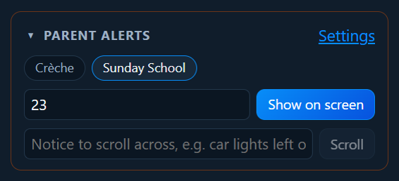
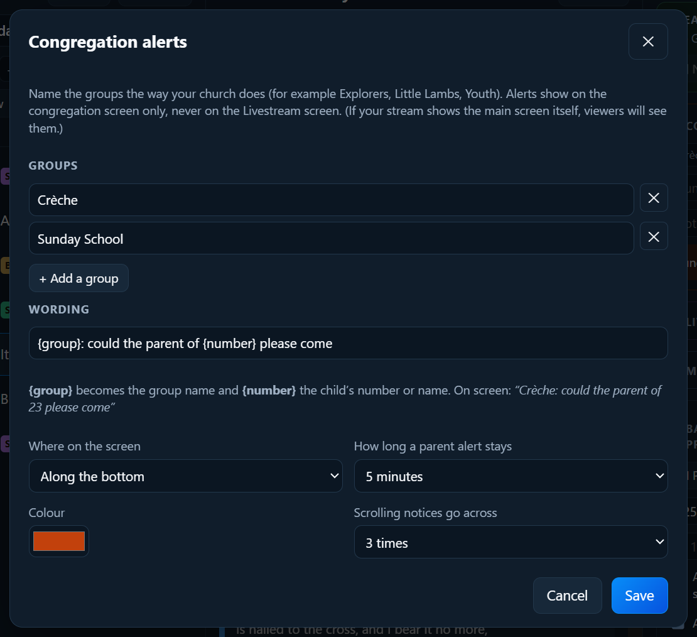

Llevar un culto
Avisos para la congregación: padres y anuncios
Abre Avisos para la congregación en la columna de la derecha.

Llamar a unos padres
- Haz clic en el grupo: por ejemplo Guardería o Escuela dominical.
- Escribe el número (o el nombre) del niño.
- Haz clic en Mostrar en pantalla (o pulsa Intro).
Aparece una franja en la pantalla de la congregación, encima de lo que se esté mostrando, y la letra le hace sitio:

Se queda los minutos que estén puestos (5 al principio) y luego desaparece solo. Para quitarlo antes, haz clic en la ✕ junto a él en la lista. Quitar todos los avisos los quita todos.
Anuncios en movimiento
Escribe un anuncio corto («¿Puede el dueño del coche azul hablar con un ujier?») y haz clic en Desplazar. Cruza la parte de abajo de la pantalla unas cuantas veces y luego para.
Tus propios nombres de grupos
Haz clic en Ajustes en Avisos para la congregación.

- Cambia el nombre de los grupos por los que use tu iglesia: Exploradores, Corderitos, Jóvenes… Añade o quita grupos.
- El texto: por ejemplo
{group}: ¿pueden venir los padres de {number}, por favor?.{group}y{number}se rellenan solos. - Dónde en la pantalla (arriba o abajo) y el Color.
- Cuánto tiempo se queda un aviso a los padres (de 1 a 10 minutos, o hasta que lo quites), y cuántas veces pasan los anuncios.
Haz clic en Guardar. Volver al texto de siempre deshace los cambios en el texto.